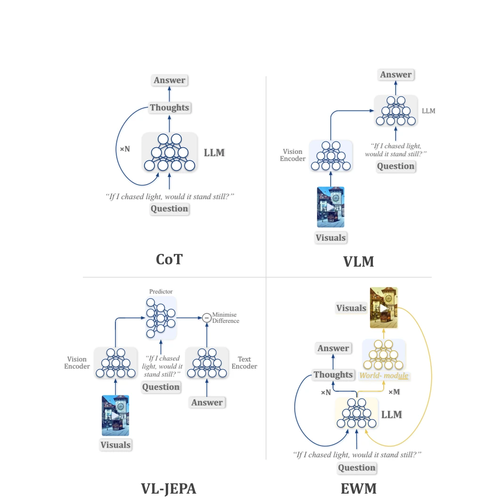

Figure 1: Einstein World Models (proposed) build upon traditional LLM reasoning traces. However, in addition to generating tokens across N autoregressive steps, the model may, at a sparse set of M intermediate steps, invoke a callable world-module. The returned visual-temporal rollout becomes part of the trace as an inspectable hypothesis.

Figure 2: If Einstein were travelling away from the Bern clock tower at the speed of light, would the clock’s hands appear frozen in time? This figure compares how different reasoning paradigms would support such a thought experiment. Top left: In CoT, the LLM reasons only through N autoregressive text-generation steps. Top right: In VLMs, visual information can condition generation, but the relevant visuals are externally provided, rather than visualised during the reasoning trace. Bottom left: In VL-JEPA-style world models, predictive visual representations are learned from observed visual inputs, but the visual prediction itself is not selectively invoked as an intermediate reasoning artifact. Bottom right: In Einstein World Models, by contrast, the LLM (the reasoner) preserves autoregr